recursivité
Le cours comprend:
- une partie 1: Introduction à la recursivité Recursivité et fonction récurente
- une partie 2: Suite du cours sur la recursivité
- une page d'exercices. pdf.
- Un TP1 avec les exercices classiques sur la recursivité: Lien
- Un TP2 avec le tracé de dessins recursifs (Turtle): Lien
Récursivité
Principe
Un algorithme récursif est un algorithme qui fait appel à lui-même dans le corps de sa propre définition. Ce principe est aussi appelé : de l’autoréférence. (traité dans la partie autres applications de la page 2 du cours).
Cependant, cette premiere definition pourrait faire penser qu’une fonction récursive va s’appeler indéfiniment, et créer sans arrêt les mêmes figures, ou les mêmes traitements.
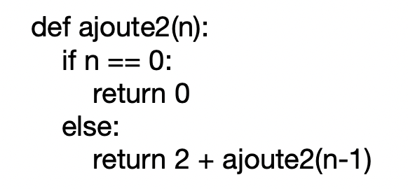
Ce n’est pas tout à fait cela.
Pour une fonction récursive, il y a plus que de la simple autoréférence:
- Il y a transmission de valeurs entre 2 étapes de la pile d’appels recursifs.
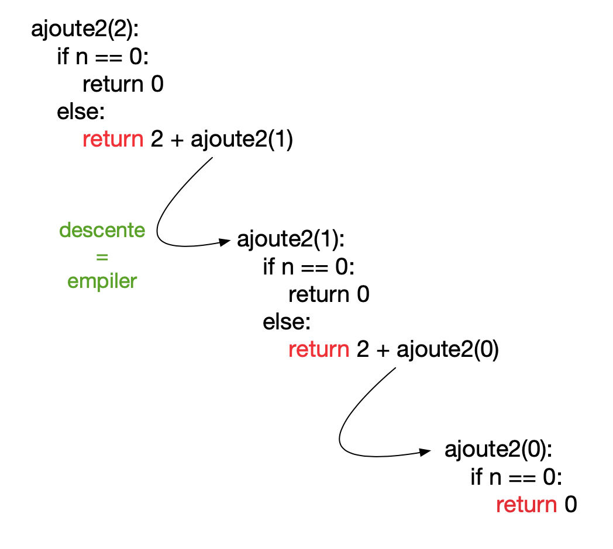
- Une valeur va remonter d’un niveau $n$ vers le niveau $n-1$ qui l’a appelé.
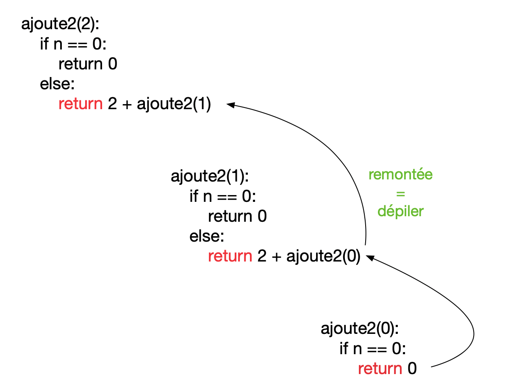
- On remonte la pile d’appels parce que la fonction contient une condition de fin (appelée condition de base).
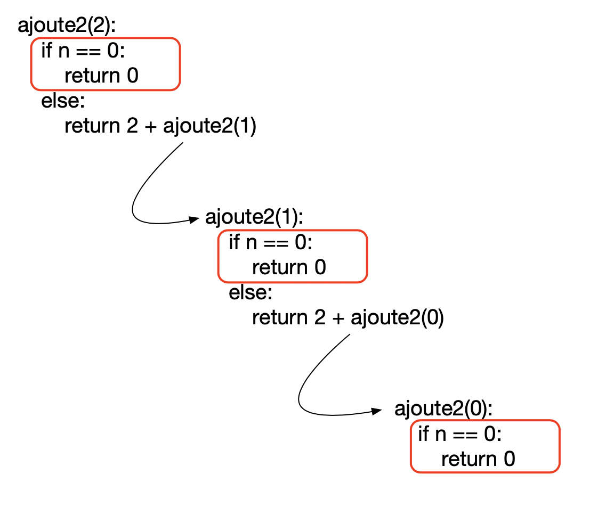
- enfin, les traitements ne sont pas tous identiques parce les arguments de la fonction changent à chaque nouvel appel recursif.
Analyse d’un exemple: itératif => récursif
Considérons une fonction ajoute2_iter qui prend N comme paramètre, et qui ajoute N fois 2.
Algorithme itératif
Supposons que nous souhaitions éviter la multiplication. L’algorithme itératif utilisera alors une boucle bornée:
Résultat
Algorithme récursif
Rappel de math: Une suite est une succession ordonnée d’éléments, comme par exemple 1, 2, 4, 8, 16. On s’interesse ici à une suite en définissant un terme à l’aide du terme précédent. (suite récurente)
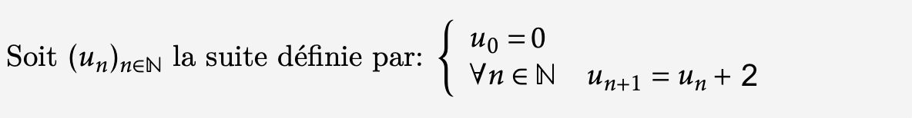
exemple de duite recursive, exprimée en langage mathématique
(a) Pour calculer le terme de rang n d’une suite, on définit un cas de base, un démarrage avec le premier terme de la suite:
$$u_0 = 0$$Dans la fonction, ce demarrage vient avec le système d’instructions:
(b) Puis vient la relation de récurence sur les éléments de la suite $u_n$:
$$u_{n+1} = 2 + u_n$$ou encore:
$$u_{n} = 2 + u_{n-1}$$On va adapter cette dernière relation dans l’appel de la fonction: return 2 + ajoute2(N-1)
Le script entier est alors:
Résultat
Une pile d’appels
Cette succession d’appels peut se resumer par une pile d’appels, où les éléments sont mis de bas en haut, les uns après les autres lors des appels recursifs successifs:
Puis, après le return 0, la valeur 0 est retournée à ajoute2(1) = 2 + 0, qui retourne 2.
La valeur 2 est retournée à ajoute2(2). Au cours de cette descente dans la pile, les éléments sont traités de haut en bas.
A la fin, ajoute2(4) = 2 + 2 + 2 + 2 + 0 = 8
Principe d’un algorithme récursif
L’algorithme récursif comprend 2 parties importantes:
- La Base : c’est le cas pour lequel le problème se resoud immediatement, par exemple :
dans le script ajoute2: le problème se resoud immediatement pour N == 0).
- L’Hérédité : calcul à partir de paramètres plus “petits” :
return 2 + ajoute2(N-1).
Une définition plus générale serait que, pour l’hérédité, il y a un appel recursif avec un argument qui se rapproche plus de la condition de base. (pour la terminaison).
Remarque: Une instruction conditionnelle est incluse dans le corps de la fonction pour forcer la fonction à retourner sans que l’appel de récurence soit exécuté (La Base). Sans cela, le programme pourrait tourner en boucle…
Comparatif itératif - récursif
Une grande partie des problèmes peut se résoudre avec une implémentation récursive, comme avec une implémentation itérative. L’une ou l’autre peut paraître plus ou moins naturelle suivant le problème, ou suivant les habitudes du programmeur.
| Itératif | Récursif | |
|---|---|---|
| Principe | Permet d’executer plusieurs fois l’ensemble des instructions | La fonction s’appelle elle-même |
| Format | L’itération comprend l’initialisation, la condition, l’exécution de l’instruction dans une boucle et la mise à jour (incrémenter et décrémenter) la variable de contrôle. | Seule la condition de terminaison est spécifiée. |
| Terminaison | L’instruction d’itération est exécutée plusieurs fois jusqu’à ce qu’une certaine condition soit atteinte. | Si la fonction ne converge pas vers une condition appelée (cas de base), elle conduit à une récursion infinie. |
| Taille du script | L’itération rend le script plus long | Taille du script réduite |
Enfin, l’algorithme récursif utilise une pile d’appels, comme vu sur l’animation suivante:
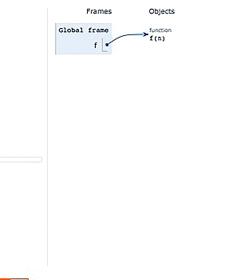
animation issue de l'application pythontutor
- factorielle
- suite de Fibonacci.
exemple : factorielle
programme itératif
a. terminaison : l’algorithme consiste en une boucle qui execute n itérations.
- Le convergent n-i decroit strictement à chaque itération et on sort de la boucle quand il vaut 0.
- Chaque iteration contient un nombre fini d’opérations élémentaires : 1 mutiplication et 1 affectation. Donc il termine après 2n+1 operations.
b. correction : On prouve par recurrence sur le nombre d’iterations qu’apres la ieme iteration de la boucle for : res=i! Preuve par récurrence :
- après la 1ere itération, res = 1 ! (OK)
- Hypothèse de récurrence : (H.R.) supposons qu’après la ieme itération, res=i ! Montrons qu’après la (i+1)ieme iteration, res=(i+1)! :
- avant la (i+1)e iteration, res = i !
- La (i+1)e iteration multiplie res par i+1, donc après la (i+1)e iteration, $res= i! \times (i+1) = (i+1)!$
- Après n iterations, res contient n ! donc le resultat est celui attendu.
Programme recursif
On a la relation de récurence suivante:
$$u_n = n \times u_{n-1}$$La relation d’heredité est alors return n*fact_recur(n-1)
Le premier terme est:
$$u_0 = 1$$et le script de la fonction recursive:
On pourrait représenter la pile d’execution de cette fonction de la manière suivante :
Dans le cas d’un algo recursif, pas de convergent ni d’invariant de boucle. On prouve par recurrence sur n.
a. Teminaison: si n=0, fact(0) fait un test et renvoie 1, sans appel recursif.
Hypothèse de récurrence: fact(n) termine après n appels recursifs. Montrons que fact(n+1) termine après (n+1) appels recursifs:
- fact(n+1) fait un test n+1>0 donc on passe au
elsepuis on appelle fact(n) par recurrence qui termine apres n appels recursifs. Finallement fact(n+1) termine après (n+1) appels recursifs.
b. correction: par recurrence fact(n) = n ! :
- pour n = 0 : fact(n) = fact(0) = 1 = 0! (OK)
- si vrai pour n, alors $fact(n+1) = (n+1)*fact(n)$ et par hyp H.R., $fact(n) = n!$ donc $(n+1)*n! = (n+1)!$ (OK)
Complexité
Calcul de la complexité : Soit T(n) le nombre d’opérations fondamentales. Pour une fonction récurrente, c’est le nombre de résolution de la fonction de récurence. On a T(n) = T(n-1) + 1 donc T(n) = n
Analyser un algorithme récursif
Preuve de correction d’un algorithme récursif
Alan Turing (1912 – 1954) énonce ainsi son principe d’indéciablité de la terminaison d’un algorithme(1936): L’indecidabilite c’est l’impossibilité absolue et définitivement démontrée de résoudre par un procédé général de calcul un problème donné.
La terminaison, ainsi que la correction ou la complexité doivent être prouvées par des arguments mathématiques.
- terminaison : recherche du convergent
- correction / validité : recherche de l’invariant de boucle pour démontrer sa (non) variation selon un argument de recurence
- puis finir en montrant que l’invariant de boucle ou bien le resultat obtenu repond bien à la specification de l’algorithme
Complexité d’un algorithme recursif
Pour un algorithme récursif, on compte le nombre d’appel récursif et il suffit en général de se ramener à une relation définissant une suite récurente. On se ramène souvent à évaluer une relation du type :
$$T_n = a \times T_{f(n)} + T$$où :
- $T_n$ est la complexité pour une donnée de taille n ; a est le nombre d’appel récursif ;
- f(n) décrit la variation de n dans l’appel récursif;
- T est la complexité des calculs hors appel récursif.
| relation de récurrence sur T | solution | comportement asymtotique |
|---|---|---|
| T(n) = T(n-1) + b | T(n) = T(0) + b×n (somme de termes constants) | O(n) |
| T(n) = a×T(n-1) + b, a ≠ 1 | $T(n) = a^n × (T(0) – b/(1-a)) + b/(1-a)$ (suite géométrique) | $O(a^n)$ |
| T(n) = T(n-1) + a×n + b | T(n) = T(0) + a×n×(n+1)/2 + n×b (suite arithmetique pour le 2e terme) | $O(n^2)$ |
| T(n) = T(n/2) + b | $T(n) = T(1) + b×log_2 (n)$ | $O(log_2 n)$ |
Application 1: suite de Fibonacci
La suite de Fibonacci est une suite récurente d’ordre 2: On calcule l’un de ses termes à l’aide des deux termes précédents.
Définitions
Fibonacci était le surnom de Léonard de Pise (1170 -1250) . Il a posé un problème dans lequel il cherche à calculer le nombre de couples de lapins au bout de n années, lorsqu’ils se reproduisent selon les règles suivantes :
- Lors de la première année, l’éleveur démarre avec un couple de lapins nouveaux nés.
- Un couple de lapins donne naissance à un nouveau couple tous les ans, à partir de la 2ème année (la 1ère année, il est trop jeune).
On peut compléter le tableau suivant présentant l’effectif de ces couples de lapins :
| numero de l’année | nombre de couples de l’année précédente | nouveau nombre de couples |
|---|---|---|
| 0 | 0 | 0 |
| 1 | 0 | 1 |
| 2 | 1 | 1 + 0 = 1 |
| 3 | 1 | 1 + 1 = 2 |
| 4 | 2 | 2 + 1 = 3 |
| 5 | 3 | 3 + 2 = 5 |
| 6 | … | … |
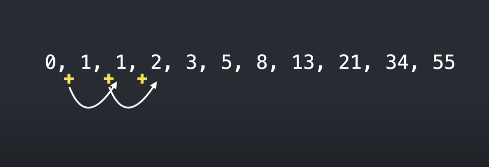
On définit la suite ($f_n$) des nombres de Fibonacci par :
$$\left\\{\begin{matrix}\begin{align}f\_0 & =0\\\f\_1 & =1\\\f\_{n+1} & =f\_{n}+f\_{n-1}, \forall n \in \mathbb{N}^+\end{align}\end{matrix}\right.$$Les nombres de Fibonacci apparaissent aussi dans la croissance des plantes. Le nombre de pétales des différentes fleurs est souvent un nombre de la suite de Fibonacci. On remarque que l’ angle entre deux primordia successifs, tend vers L’ANGLE D’OR, et que plus les nombres successifs sont grands, plus le rapport s’approche du NOMBRE D’OR.
Algorithme itératif
Exercice : Ecrire un programme qui permet d’afficher tous les nombres de la suite de Fibonacci, du rang 0 au rang n=10.
Algorithme récursif
Parfois, l’algorithme récursif n’est pas le plus performant: Pour l’exemple de la suite de Fibonacci, on constate que les mêmes calculs sont répétés plusieurs fois, comme fibo(2) dans le cas présent pour N = 4):
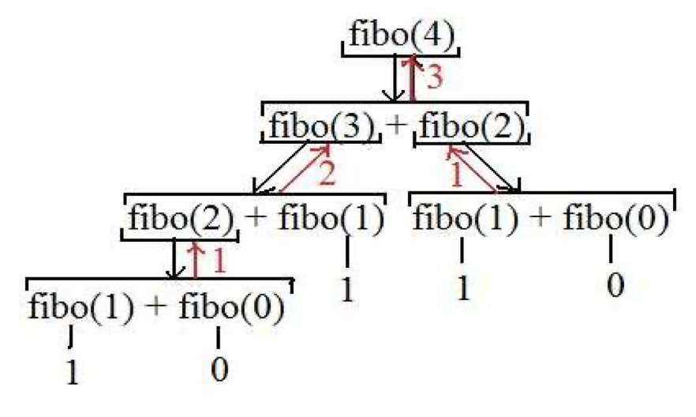
pile d'appels pour la suite de fibonacci recursive
Application 2: recherche du PGCD
La méthode de recherche du PGCD utilise aussi une suite récurente d’ordre 2: On calcule l’un de ses termes à l’aide des deux termes précédents.
Problème
Etant donné deux entiers naturels n et m, calculer leur pgcd (plus grand commun diviseur)
algorithme d’Euclide
Euclide propose l’algorithme suivant:
- Calculez le reste r dans la division de a par b
- Si r est nul alors le pgcd est b
- Sinon recommencer l’étape 1 avec a = b et b = r
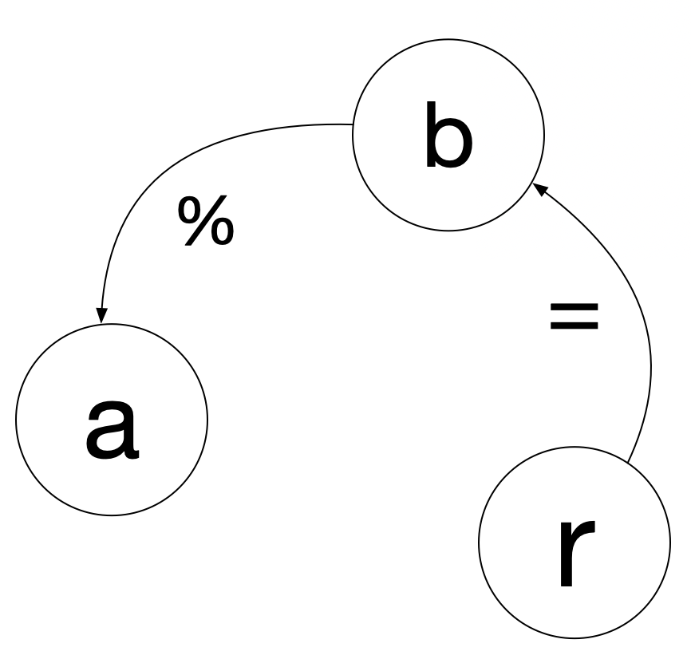
Exemple d’exécution : a = 32, b = 12 :
– 32 = (2 x 12) + 8
– 12 = (1 x 8) + 4
– 8 = (2 x 4) + 0
On a donc pgcd(32, 12) = 4
La page dédiée sur wikipedia propose une illustration géométrique de cette méthode. Un couple d’entiers est vu comme un rectangle, dont le PGCD est la longueur du côté du plus grand carré permettant de carreler entièrement ce rectangle:
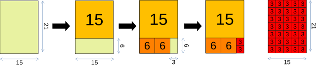
Explication géométrique de l'algorithme d'Euclide sur les entiers 21 et 15. - source wikipedia
Algorithme PGCD itératif
Preuve de l’algorithme itératif
a. Terminaison : on utilise une boucle non bornée avec y qui est le convergent. On affecte à y le reste de la division par y (c’est donc inferieur à y). y décroit ainsi jusqu’à 0, ce qui est la condition de fin de la boucle.
b. Correction : Tout diviseur commun de a et b divise aussi r = a - bq, et réciproquement tout diviseur commun de b et r divise aussi a = bq + r. Donc le calcul du PGCD de a et b se ramène à celui du PGCD de b et r. l’invariant de boucle, c’est donc : euclide(a,b) = euclide(b, a modulo b)
C’est ce qui est réalisé par la fonction, puisque l’on a comme valeurs pour les couples (x,y) successivement :
algorithme recursif
Le PGCD d’Euclide calcule une suite définie par une récurence à 2 termes:
$r_0 = a$
$r_1 = b$
$r_2 = r_0 \\% ~r_1$
$r_{n+1} = r_{n-1} \\% r_n$
Suite du cours
Aller à la page 2 du cours.
La récursivité intervient aussi dans de nombreux problèmes où elle s’impose comme la méthode la plus adaptée, pour ne pas dire la seule. Un exemple historique est celui des tours de Hanoi. Un jeu inventé par Edouard Lucas, vers 1880. Son traitement sur ordinateur a fait sensation, grâce à la simplicité de son script récursif…
Exercices
Ex 1 :
On place un capital exprimé en euros égal à $w_0 = 1500$ avec un taux d’intérêt égal à 4,5% par an et on note $w_n$ le capital obtenu au bout de n années.
- Exprimer $w_n$ en fonction de $w_{n-1}$.
- Ecrire le script récursif d’une fonction
capitalqui calcule le montant du capital à l’annéen. Cette fonction aura pour paramètresnett, le taux d’interêt. - Calculer grâce à cette fonction la valeur du capital au bout de 10 ans.
- Au bout de combien d’années le capital initial aura-t-il doublé ?
Exercice adapté de la page bibmath.net
Ex 2 : Dessin recursif
Soit la relation de recurence suivante:
$$u_{n+1} = \tfrac{8u_n}{9} + \tfrac{1}{9}$$Le premier terme de la suite est $u_0 = 0$
Script python
Ecrire en python le script de la fonction recursive correspondante, qui calcule au rang n le nombre $u_n$. Appeler cette fonction f.
Application géométrique
On considère un carré de côté 1. On le partage en 9 carrés égaux, et on colorie le carré central. Puis, pour chaque carré non-colorié, on réitère le procédé. On note $u_n$ l’aire coloriée après l’étape n. La suite $u_n$ est $u_{n+1} = \tfrac{8u_n}{9} + \tfrac{1}{9}$
Quelle est la limite de la suite $u_n$?
Exercice adapté de la page bibmath.net
Ex 3 : longueur d’une liste
algorithme itératif :
La fonction suivante calcule la longueur d’une chaine de caractères seq passée en argument.
Réaliser la preuve de cet algorithme.
algorithme récursif
a. Montrer que la relation de récurence $u_{n+1} = 1 + u_n$ permet de compter de 1 en 1.
b. Soit la chaine de caractères s = "abcd". On veut supprimer le premier caractère de s à l’aide d’un slice python. Quelle est l’instruction python correspondante?
c. Ecrire le script python de l’algorithme récursif
Aide pour l’écriture de l’algorithme recursif : la fonction récursive s’appelera len_recursive, et aura pour argument seq. Si on veut passer en argument la liste seq de laquelle on retire le premier élément, on fait : len_recursive(seq[1:]). Il faudra alors s’inspirer de la relation de récurence suivante lors de l’appel recursif:
Ex 4 : Exponentiation
Etudions l’exponentiation à travers deux exemples.
- Combien de produits sont necessaires pour calculer une puissance n-ième avec la fonction
exp1? - Pour la fonction
exp2: Soit $u_n$ le nombre de produits nécessaires pour calculer une puissance n-ième. Quelle est la relation de récurrence vérifiée par $u_{n+1}$ ? $$u_{n+1} = u_n + ...$$ - En déduire la complexité pour chacune de ces 2 fonctions.
Ex 5: dichotomie recursif
la méthode de dichotomie pour calculer la racine d’une fonction. Soit une fonction f : R → R continue, dont on sait qu’elle a une racine et une seule sur un intervalle [a, b]. On cherche une valeur approchée de cette racine. voir figure ci-dessous
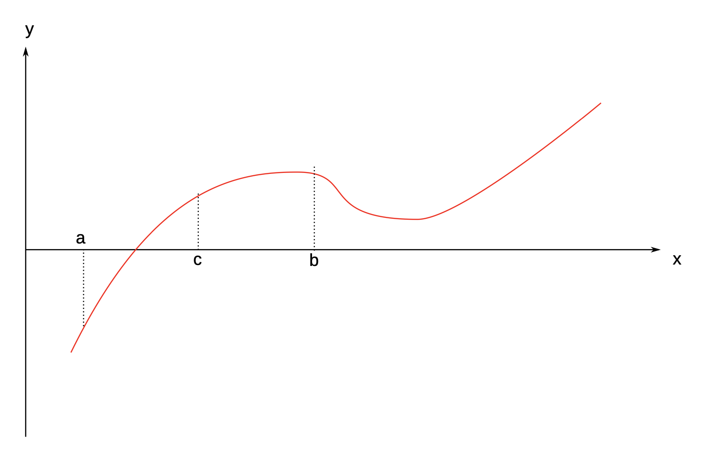
principe de la dichotomie
f(c) et on compare son signe à f(a) et f(b). La racine est nécessairement dans le sous-intervalle aux bornes duquel la fonction f prend deux valeurs de signes opposés (ou éventuellement nulles toutes les deux). On est donc conduit à répéter la recherche sur l’intervalle [a, c], qui est similaire au premier, d’où le caractère récursif de cet algorithme. La récursion doit être stoppée lorsque la valeur |f (c)| est inférieure à une tolérance ε que l’on fixe en fonction de la précision souhaitée.
On utilise la fonction dichotomie_recursive pour la fonction f(x):
On fait alors:
- Interpreter le résultat obtenu.
- Que valent chacun des paramètres de la fonction lors du premier appel avec
dichotomie_recursive(f,0.0,2.0,1e-3))? - Que valent chacun des paramètres lors du premier appel recursif par cette fonction?
- A quel moment cette fonction va-t-elle finir?
- Prouver la terminaison de cette fonction.
- Soit un tableau contenant des nombres entiers triés par ordre croissant :
Écrire une fonction qui permet d’insérer un nombre entier x dans cette liste. La recherche de l’emplacement d’insertion doit se faire par dichotomie. Pour faire l’insertion juste avant l’élément d’indice i :
Cela renvoie un nouveau tableau avec l’élément inséré.
Suite
- suite du cours: Lien
Autres exercices avec editeur online
Lien vers la page des exercices
Liens
- article sur les tours de Hanoi http://accromath.uqam.ca/2016/02/les-tours-de-hanoi-et-la-base-trois/
- algorithmes recursifs : https://fr.wikipedia.org/wiki/Algorithme_récursif
- calcul de complexité de Fibonacci recursif et programmation dynamique: univ-mlv.fr
- autre site NSI: eskool.gitlab.io